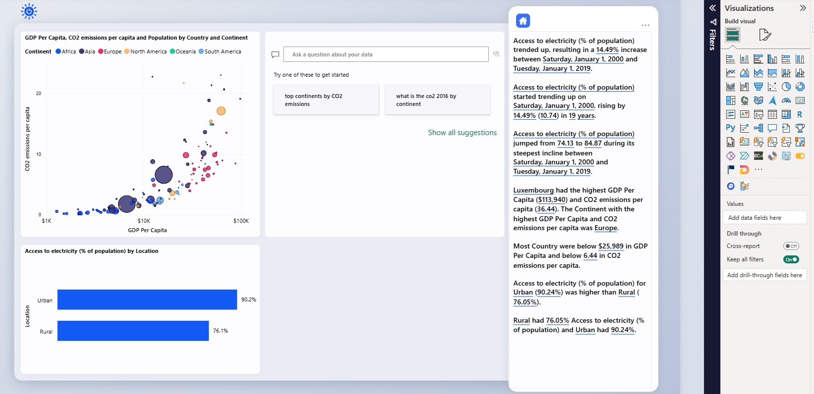
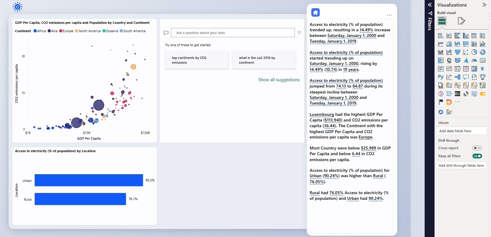

About Me
Who I Am
Hello! I'm Amir Reza Hajiarbabi, a Data Scientist and Data Analyst. I specialize in data analysis, machine learning, and building actionable insights from complex datasets.
My passion is transforming raw data into clear, understandable, and actionable solutions for businesses and projects.
Check out my LinkedIn profile for more details.
 

Experience & Skills
I have extensive experience in data analytics, forecasting, ERP systems (SAP MM/PP), and optimization techniques. I also work on dashboard design and visualizations to help decision-making.
My technical toolkit includes Python, Power BI, MATLAB, Lingo, GAMS, and advanced Excel.
Learn more about my projects on YouTube: Upacademy.


Achievements
Throughout my career, I have contributed to projects in production planning, supply chain optimization, and data-driven decision support systems. I enjoy solving complex problems with analytical approaches.
I also share knowledge and tutorials online to help others grow in the field of data science and analytics.